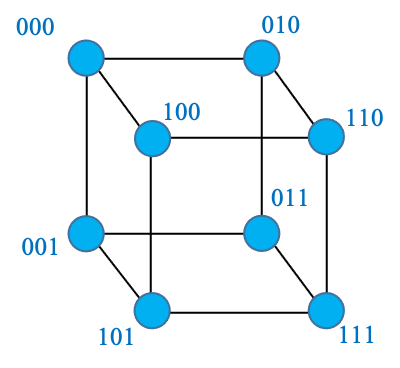
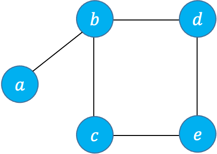
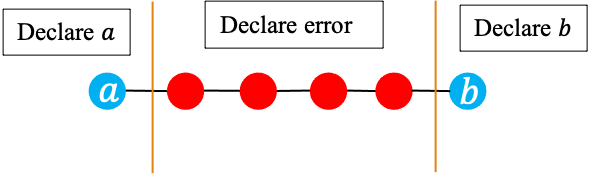
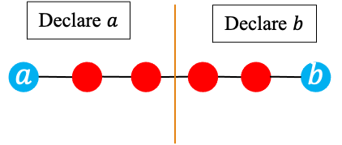
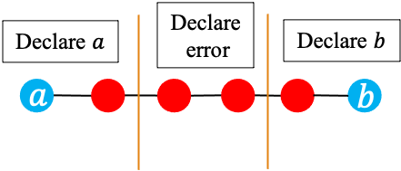

Codes, graphs, and algebra
Error-correcting codes are used for reliable communication and storage in the presence of noise and failure. In this section, we will learn about error detection and correction, graphs and their relationship to error-correcting codes, distances on graphs, and will also become familiar with some elementary codes based on parity bits and checksum.
Errors and reliability
Let’s start with two examples that again demonstrate the need for error correction.
Reliable data storage
From 2013 study of a Facebook datacenter:
- Hundreds of thousands of terabytes of data
- Growing at a few thousand terabytes per week
- Composed of thousands of machines storing 24-36 TB each
- Due to hardware failures, an average of 50 machines unavailable at any given time
Amazon, Facebook, Google, Microsoft, etc. continue to expand their datacenters, and these numbers are likely now off by an order of magnitude. How do we deal with this situation? Losing user data is probably the surest way of destroying your company?
Reliable communication
It’s even worse when communicating wirelessly. There is a tremendous amount of noise and interference making communication difficult. How can we watch an HD movie when the wireless link is so unreliable?
Two types of errors
We have already noted that real world measurements of signals are inherently noisy. If we threshold a digital signal to recover binary digits, the noise can cause random errors in our signal. This leads to a substitution or bit flip error.
- Substitution error: 11001010 $\to$ 11011010
But there is a second type of error, usually resulting from device failure. Bits stored on flash memory may become inaccessible due to cells failing. If a hard drive fails, the data is lost. These are erasure errors; similar to someone erasing your notes.
- Erasure error: 11001010 $\to$ 110?1010
The difference between substitutions and erasures is that when a substitution occurs we don’t know which bits are affected. So correcting substitutions is more difficult.
The basics of error control
Error detection and correction
To deal with errors, we have multiple tools at our disposal. These tools can be used to detect, and sometimes correct, bit errors.
- Error detection: we can determine correctly (with high probability) whether or not a signal contains an error (or multiple errors).
- Error correction: we can determine correctly (with high probability) the intended or corrected signal bits, in the presence of one or more errors.
Together, error detection and correction are sometimes referred to as error control.
Since noise is random, we can only provide probabilistic guarantees for these methods, instead of strict, deterministic ones. More about that later…
The basic idea
We have seen before that English, as well as any other language, have error-correction capability, enabling spell check and autocorrect. But how do these work? We can find the answer by asking a related question: Why isn’t it possible to spell check/autocorrect email addresses? An email address can be any string of letters but not every sequence of letters is a word.
When autocorrect sees a sequence of letters that is not a word, it has two possible choices:
- Error-correction: Replace it with a word that is close to it: teh → the, cancelled → canceled
- Error-detection: Indicate it as an error: thas
Same idea can be used for correcting bit errors
Correcting and detecting transmission and storage errors requires restricting the set of possible words (e.g., binary sequences).
Even parity. Suppose we can send 3-bits. We decide that only 3-bit words that have an even number of ones are allowed: {000,011,101,110}
Which errors can be detected?
- Any single bit flip.
Which errors can be corrected accurately?
- We can’t correct any errors with confidence. For example, if we receive $010$, there are three possible sequences that only differ in a single bit. The situation is similar to autocorrecting ‘thas’. It could be ‘this’, ‘that’, or ‘thus’.
If $1011$ is received, and assuming there is at most 1 error, what could be transmitted?
Codes, encoding, and decoding
We said that to correct errors, we need to restrict the set of words (English words, binary sequences, …), so that when an error happens, we are likely to find out. This restricted set of messages is called a code. The message is what we need to transmit or store. But instead of sending the actual message, we send a codeword corresponding to that message. While the message can be anything, codewords are from a restricted set, allowing us to detect or correct errors that occur in transmission.
Let’s make our terminology a bit more precise. For each definition, we provide an instance from the 3-bit even-parity code from above and also from English.
| Message | Codeword |
|---|---|
| 00 | 000 |
| 01 | 011 |
| 10 | 101 |
| 11 | 110 |
-
Code: the set of permitted words
- For 3-bit even parity, the code is {000,011,101,110}
- The equivalent in English is the set of entries in the Dictionary
-
Codeword: Each of the permitted words
- 011 is a codeword in our example
- The equivalent in English is a word, e.g., apple
-
Message: This is what you need to send/store
- A number of bits (e.g., part of the contents of a file). In our example, each message consists of two bits.
- Equivalent to objects/concepts/ideas in English that you want to convey: e.g., 🍎
| Received word | Decoded message |
|---|---|
| 000 | 00 |
| 001 | Error |
| 010 | Error |
| 011 | 01 |
| 100 | Error |
| 101 | 10 |
| 110 | 11 |
| 111 | Error |
-
Encoding: mapping message bits to codewords
- Example: see right table
- Equivalent to mapping ideas to words: 🍎 → apple
-
Decoding: mapping received bits to message
- Example: see table
- Equivalent to mapping what we read to ideas: aaple → 🍎
Let’s compare using the even-parity code with using no coding at all. With no coding, if send 00 and 01 is received due to a bit flip, there is no way for the receiver to detect this. But if we use the even parity code with encoding table above and transmit 000, a bit flip may lead to 010. But as shown in the decoding table, this error can be detected.
The length of the codes is the number of bits in each codeword. The number of information bits or message bits are the number of bits in each message. For our 3-bit even parity code, the code length is 3 and the number of message bits is 2. The remaining bits are redundancy bits. We have the following equality
\[\text{Number of codewords} = 2^{\text{Number of message bits}}.\]Graphs and distance
Graphs are a good way to visualize ideas about error control, especially “similarity” between codewords.
A graph $𝐺=(𝑉,𝐸)$ consists of a set of vertices $V$ and a set of edges $E$, where each element of $E$ represents a specific relationship between two vertices. Two vertices with an edge between them are called adjacent.
Examples:
- A graph representing friendships among students
Alice --------------- Bob | \ | \ | \ | \ | \ | \ Charlie ------Dave---------EveHere, Alice and Bob are friends but Alice and Eve aren't as there is no edge between Alice and Eve. - A graph of 3-bit words, with edges between those that differ in one position. More specifically, consider the set of binary sequences of length 3:
$$\{000,001,010,011,100,101,110,111\}$$
These are the vertices of the graph. There is an edge between two sequences if they only differ in one bit, e.g., 010 and 110

Distance
The distance between two nodes in a graph is the number of edges on the shortest path between them
|  |
|
Hamming distance
The Hamming distance between two words is the number of positions in which they are different. In other words, it is the number of bits that you need to flip to convert one binary sequence to the other.
\[𝑑_𝐻 (000,101)=2\]This coincides with the distance over the graph. This is because flipping one bit allows you to move along one edge, forming a path. For example, to convert 000 to 101 you can first flip the first bit, getting to 100 and then flip the last bit, getting 101.
- $d_H(00000000,11111111)$
- $d_H(01010101,10101010)$
- $d_H(01001111,01010000)$
A few simple codes
We now discuss a few simple binary codes. We visualize these codes as graphs, which will help us better understand their error-detection and/or error-correction capabilities. When representing a binary code as a graph, we should indicate which of the vertices/sequences are codewords. The graph for the 3-bit even-parity code is given on the right. The codewords of this code are
\[\{000,011,101,110\},\]which are shown with a blue color.
Double redundancy code
Let’s consider first the simple case of detecting an error via double redundancy.
- Encoding: 𝑥→𝑥𝑥
- Decoding: 𝑥𝑥→𝑥, 01→error, 10→error
- How many message bits can we send each time? 1
- How many errors can we detect reliably? 1
- How many errors can we correct reliably? 0
- What is the smallest distance between any two codewords? 2
Only allowed to send 3-bit words that have an even number of 1s
- Encoding: 00→000, 01→011, …
- Decoding: 000→00, 001→error , …
- How many message bits can we send each time? 2
- How many errors can we detect reliably? 1
- How many errors can we correct reliably? 0
- What is the smallest distance between any two codewords? 2
Repeat each bit twice! For decoding, detect but do not try to correct!
- Encoding: 0→000, 1→111
- Decoding: 000→0, 001→error , …
- How many message bits can we send each time? 1
- How many errors can we detect reliably? 2
- How many errors can we correct reliably? 0
- What is the smallest distance between any two codewords? 3
The same code can behave differently depending on the decoding strategy. The example below illustrates this fact.
Repeat each bit twice! For decoding, find the closest valid codeword!
- Encoding: 0→000, 1→111
- Decoding: 000→0, 001→000, …
- How many message bits can we send each time? 1
- How many errors can we detect reliably? 1
- How many errors can we correct reliably? 1
- What is the smallest distance between any two codewords? 3
Decoding and errors
Decoding strategy
As we saw with the triple redundancy code, when an invalid word is received, we have a couple of choices:
- Minimum distance decoding: find the closest valid codeword and then identify its corresponding message.
- Declare error
The first method allows correcting errors but it increases the probability that an error is corrected in the wrong way. For example, suppose in the triple redundancy code we receive 010 when 111 was sent. Minimum distance decoding will output 000 which is incorrect.
The graphs below show the possibilities when different strategies can be used for different received words:
|  |  |  |
Minimum distance and errors
The minimum distance of a code is the smallest distance between codewords. The minimum distances of the even-parity code, the double redundancy code, and the triple redundancy code are 2, 2, and 3, respectively.
To detect $s$ errors, what should the minimum distance be?
- Need $d \geq s + 1$
To correct $t$ errors, what should the minimum distance be?
- Need min distance $d \geq 2t + 1$
A Hamming distance (between codewords) of $s+1$ is needed to detect $s$ errors per word, and a Hamming distance of $2t+1$ is needed to correct $t$ errors per word.
Erasure errors
So far we have mostly discussed bit flip errors, where it is not known which bits may be erroneous. But sometimes we may know which bits are unreliable or inaccessible: 01010001→010?0?01
- A hard drive may fail,
- A letter in a word may be smudged
- Communication channel is momentarily obstructed
A Hamming distance (between codewords) of $u+1$ is needed to correct $u$ erasure errors.
- $𝑧_1=10??10?0$
- $𝑧_2=1?1110??$
- $𝑧_3=1?0??011$
- $𝑧_4=1??110??$
A simple strategy can be used to recover data when a drive fails: We Store the bits of each codeword on different drives. An example with even-parity code is shown below. Example: even parity
| Disk 1 | $x_i$ | 01011101111100100001… |
| Disk 2 | $y_i$ | 01111110010001110010… |
| Disk 3 | $z_i = x_i+y_i$ | 00100011101101010011… |
The codes we have seen so far
Let us review all the codes that we have seen so far. Before doing so, let us also define the Code rate. The code rate is the number of message bits divided by the code length (number transmitted bits).
Example: the number of message bits in the 3-bit even-parity code is 2
- The rate is 2/3 = 0.66
Typically, when the code rate is high, the ability to correct error is low. (But there are also poorly designed codewords that have both low rate and low ability to correct errors.)
| Code | Graph | Min distance | Rate | Error detection | Error correction |
|---|---|---|---|---|---|
| Double redundancy | 2 | 1/2 | 1 | 0 | |
| Even parity | 2 | 2/3 | 1 | 0 | |
| Triple redundancy (Declare error for invalid words) |
3 | 1/3 | 2 | 0 | |
| Triple redundancy (Minimum distance decoding) |
3 | 1/3 | 1 | 1 |
Probability of error
Let the transmitted codeword be denoted by $x$ and the result of decoding be denoted by $y$. Three cases are possible:
- Correct decoding ($x=y$): This is the desired outcome. Either no error has occurred or all errors have been corrected.
- Errors detected but not corrected ($y=$ ‘error’): The decoder may declare an error if it detects an error but is unable to correct it.
- Undetected error ($x\neq y$): Errors have not been corrected, leading to erroneous data.
When there is no coding, all errors will be undetected and the second event above does not occur.
We should also note that given that things can go wrong in multiple ways, the term ‘probability of error’ is ambiguous. It may refer to the raw bit error rate, i.e., the probability of each bit being flipped by the channel. It may also refer to the probability of the ‘undetected error’ event described above.
From a probabilistic point of view, the error-correcting capability of a code is determined by the probabilities of the three events above. We want the probability of correct decoding to be close to 1.
The double redundancy code
Let the bit error probability be denoted by $e$, and suppose bit errors are symmetric and independent of each other (the BSC model). Let’s analyze the error probabilities for the double redundancy code. We consider the number of errors and then determine the decoding event they correspond to. The binomial distribution will be of use here.
- $P($no errors$) = (1-e)^2 = 1-2e+e^2$. No errors, leading to ‘correct decoding’.
- $P($1 error$) = \binom{2}{1}(1-e)e = 2e-2e^2$. One error, and we detect it but not correct it, so we’re sort of good: ‘detected but not corrected error’.
- $P($2 errors$) = e^2$. Two errors, and we don’t detect them, so we’re not good. ‘Undetected errors’.
So the probabilities are:
- P(correct) = P(no errors)$ = (1-e)^2$.
- P(detected but not corrected error) $= 2e(1-e).$
- P(undetected error) = P(2 errors) $= e^2.$
How does this compare to no coding?
- P(correct) $= (1-e)$.
- P(undetected error) $=e$.
With no coding the probability of an undetected error is $e$, which is (much) larger than $e^2$. For example, if $e=0.1$, then $e^2 = 0.01$.
- use no coding.
- use the double redundancy code.
The cost of the transmission (time/energy) is doubled but undetected errors become much more unlikely.
The triple redundancy code
Consider the triple-redundancy code with minimum distance decoding:
- P(no error) = $(1−𝑒)^3 = 1−3𝑒+3𝑒^2−𝑒^3$. $\to$ Correct decoding.
- P(1 error) = $3(1−𝑒)^2𝑒 = 3𝑒−6𝑒^2+3𝑒^3$. Error correctly detected and corrected. $\to$ Correct decoding.
- P(2 errors) = $3(1−𝑒)𝑒^2 = 3𝑒^2 – 3𝑒^3$. Errors not corrected properly (majority rule flips bit).
- P(3 errors) = $𝑒^3$. Errors not detected (bit remains flipped).
So the probability that triple redundancy fails to produce the transmitted sequence is
\[3𝑒^2−2𝑒^3\]How does this compare to the double/ no redundancy codes? For the double-redundancy code, the probability of undetected error is $e^2$ and with no coding, the probability of error is $e$.
We can use the same scheme to detect two-bit errors if we don’t bother correcting. With the decoding rule that rejects any sequence other than 000 or 111, the probability of an undetected error for the triple-redundancy code is $e^3$.
In the previous example, if we send $n$ bits, the probability of correctly decoding is $0.97^n$. Observe as the message size grows or error probability increases, more redundancy may be needed to mitigate more errors.
\[0.97^n \to 0 \text{ as } n\to \infty\]Better codes
The triple redundancy code can only guarantee correcting 1 error. What if we need to correct more errors? Can we do better?
Yes! We need to find codes in which words are farther apart.
But then the codes will have to be longer, making it more difficult to deal with them with the tools that we have. For example, the number of nodes in a graph will get very large
Need more powerful mathematics:
- Finite fields
- Linear algebra
You may be familiar with linear algebra over real numbers. Here we will deal with linear algebra over finite fields.
Finite fields
Recall that a field is a set in which we can do elementary computation
- Add, subtract, multiply, divide (except divide by 0)
We have seen examples of infinite fields:
- Rational numbers, Real numbers, Complex numbers
For error correction, we deal with finite fields.
The simplest example of a finite field is $\mathbb F_p$, where $p$ is a prime number:
- The elements of $\mathbb F_p$ are \(\{0,1,2,\cdots,p\}\)
- Arithmetic is performed modulo $p$: if the results is $\geq p$, replace it with remainder by $p$
- We can show the rules with $\oplus$ and $\otimes$ tables
Fields with $p^m$ elements, where $p$ is a prime number and $m$ is a natural number also exist. But no other finite field exists. For example, there is no field of size 6.
Finite fields and error correction
Computers work with binary so the natural field is \(\mathbb{F}_2\). But working with \(\mathbb{F}_2\) is somewhat restrictive, given that it has only two elements. This makes designing binary codes directly difficult. Fortunately, fields of size $2^m$ exist for any $m$. These are used in practice to design codes and then map them to binary. Unfortunately, they are more complex than prime fields like \(\mathbb{F}_2, \mathbb{F}_3, \cdots\), so we’ll avoid them. To get an idea of how \(\mathbb{F}_{2^m}\) can be used for ECC, we’ll occasionally see examples with \(\mathbb{F}_p, p>2\), with the understanding that these are not common in practice.
Parity checks
| Message | Codeword |
|---|---|
| 00 | 000 |
| 01 | 011 |
| 10 | 101 |
| 11 | 110 |
Recall the 3-bit even parity code: {000,011,101,110}
- The last bit is chosen such that the total number of 1s is even
We can say that codewords $𝑥_1 𝑥_2 𝑥_3$ satisfy:
\[𝑥_1⊕𝑥_2⊕\color{blue}{𝑥_3}=0 \text{ or equivalently } \color{blue}{𝑥_3}=𝑥_1⊕𝑥_2\]The first two bits are message bits and the third bit is a redundant bit which is called the parity check bit, since it ensures a specific parity for the whole sequence. This code has minimum distance 2, so it can detect 1 error
| Message | Codeword |
|---|---|
| 000 | 000000 |
| 100 | 100110 |
| 010 | 010___ |
| 001 | 001___ |
| 110 | 110___ |
| 101 | 101___ |
| 011 | 011___ |
| 111 | 111___ |
We can have more than one parity bit to make codes more reliable:
- Information bits: $\color{green}{x_1x_2x_3}$
- Codeword: $\color{green}{𝑥_1 𝑥_2 𝑥_3 }\color{blue}{𝑥_4 𝑥_5 𝑥_6}$
- Parity bits:
- $ \color{blue}{x_4} = \color{green}{x_1} \oplus \color{green}{x_2} $
- $ \color{blue}{x_5} = \color{green}{x_1} \oplus \color{green}{x_2} $
- $ \color{blue}{x_6} = \color{green}{x_2} \oplus \color{green}{x_3} $
This is essentially a system of equations and, as we will see, that’s where linear algebra will come in.
ISBN-10
$\mathbb F_{11}$ Multiplication table

An example of a code over a finite field is ISBN 10, which is over $\mathbb F_{11}$.
- The elements are {0,1,2,3,4,5,6,7,8,9,𝑋}, where 𝑋 represents 10
ISBN is a 10-digit string $\color{green}{𝑥_{10} 𝑥_9 𝑥_8⋯}\color{blue}{𝑥_1}$ where $𝑥_1$ is chosen such that in $\mathbb F_{11}$
\[\sum_{i=1}^{10} 𝑖𝑥_𝑖=0\]Parity bits and redundancy
With parity bits, we are adding redundant information.
- Redundancy allows us to recover a message from a corrupted or imperfect copy, or to detect that copy is erroneous.
- This is because the parity bit values depend on the other signal bit values, and introduce an interdependency among signal bits that did not exist before.
- This interdependency restricts the set of valid bit strings.
- While the information being transmitted remains the same, the bits per message increases.
- Unfortunately, this means we have a trade-off: we can transmit data fast, or we can transmit data reliably, or hopefully strike the right balance between the two.
More redundancy $\to$ lower data rate, reduced transmission efficiency
- Can be worth it if error probability is high enough, or cost of errors is high enough
A code is said to approach capacity if its rate is close to the capacity of the channel $𝐶$ and the probability of uncorrected errors can be made as small as we want.
- In a block of $𝑁$ bits, $𝐶𝑁$ bits are information bits and $(1−𝐶)𝑁$ bits are parity bits
More sophisticated codes can get better efficiency with same error correction performance (next time: block codes / Hamming codes)
Linear algebra is the key to formulating these block codes and showing how many errors they can detect or correct. To do that, we need to extend what we’ve learned about vectors and matrices to those involving binary variables.